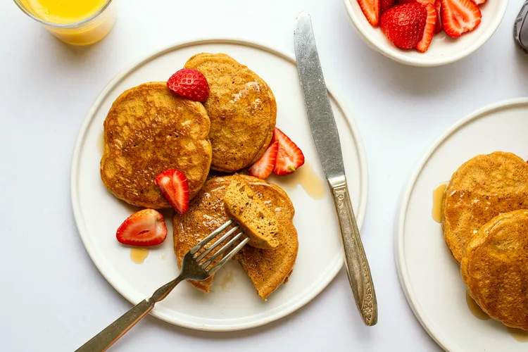

Almond Butter Pancakes

Description
This almond butter pancake recipe only has 3 ingredients and is easy to makes
in the morning if you need a quick meal.
Ingredients
- 2 large eggs
- 1/4 cup of almond butter
- 1/2 teaspoon baking powder
- 1 pinch of salt (only if your almond butter is unsalted)
Instructions
- Crack the eggs into a bowl and whisk until smooth
- Add the almond butter, baking powder, salt, and any other add ins you may want, whisking until fully combined
- Allow the batter to rest while you heat your pan
- Warm a nonstick skillet over medium-low heat and grease with vegetable oil to prevent sticking
- Spoon the batter in 1-2 tablespoons at a time cooking until golden for 2-3 minutes
- After flipping, allow the pancakes to cook for another 1-2 minutes then enjoy!
Recipe Home